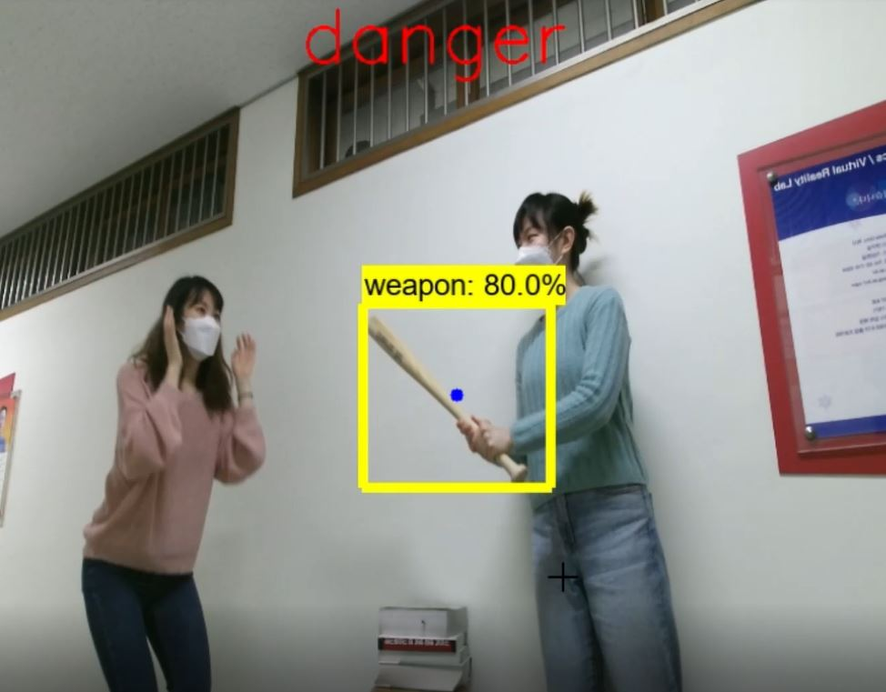
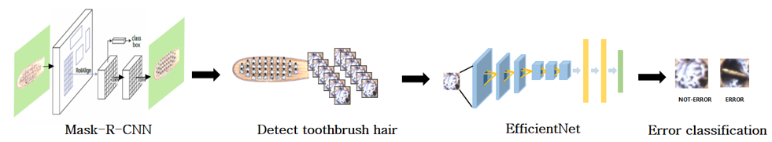

Chaelin Kim
Contact:
Email: ccaa9697@gmail.com
cl.kim@ivpl.sookmyung.ac.kr
Links:


I’m a computer science researcher with a focus on deep learning in facial expression recognition with few-shot learning. I have extensive experience in deep learning and AI research with institutions in both Korea and USA. I am a hardworking and ambitious individual, I am a self-starter and I am highly motivated with a great passion in the field of machine learning.
I received my BS in IT Engineering from Sookmyung Women's University on August 2021. Currently, I am a MS student in IT Engineering from Sookmyung Women's University under supervision of Prof. Byung-Gyu Kim.
Recent News
- July - August 2022. Research Intern in The University of Akron (Ohio, US).
Research
I am interested in training datasets with few-shot learning for facial expression recognition.Publications
|  |
Chae Lin Kim, Jeong-Been Seo, Byung-Gyu Kim Korea Multimedia Society (KMMS), Nov 2021. |
|  |
Chae Lin Kim, Young-Ju Choi, Byung-Gyu Kim, Eun-Ha Park, Kyung-Tae Lee Korea Multimedia Society (KMMS), April 2021. |